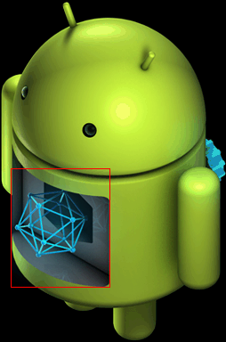
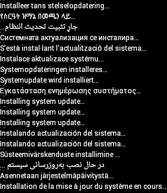

The recovery system includes several hooks for inserting device-specific code so that OTA updates can also update parts of the device other than the Android system (e.g., the baseband or radio processor).
The following sections and examples customize the tardis device produced by the yoyodyne vendor.
Partition map
As of Android 2.3, the platform supports eMMc flash devices and the ext4 filesystem that runs on those devices. It also supports Memory Technology Device (MTD) flash devices and the yaffs2 filesystem from older releases.
The partition map file is specified by TARGET_RECOVERY_FSTAB; this file is used by both the recovery binary and the package-building tools. You can specify the name of the map file in TARGET_RECOVERY_FSTAB in BoardConfig.mk.
A sample partition map file might look like this:
device/yoyodyne/tardis/recovery.fstab
# mount point fstype device [device2] [options (3.0+ only)] /sdcard vfat /dev/block/mmcblk0p1 /dev/block/mmcblk0 /cache yaffs2 cache /misc mtd misc /boot mtd boot /recovery emmc /dev/block/platform/s3c-sdhci.0/by-name/recovery /system ext4 /dev/block/platform/s3c-sdhci.0/by-name/system length=-4096 /data ext4 /dev/block/platform/s3c-sdhci.0/by-name/userdata
With the exception of /sdcard, which is optional, all mount
points in this example must be defined (devices may also add extra partitions).
There are five supported filesystem types:
- yaffs2
- A yaffs2 filesystem atop an MTD flash device. "device" must be the name of
the MTD partition and must appear in
/proc/mtd. - mtd
- A raw MTD partition, used for bootable partitions such as boot and
recovery. MTD is not actually mounted, but the mount point is used as a key to
locate the partition. "device" must be the name of the MTD partition in
/proc/mtd. - ext4
- An ext4 filesystem atop an eMMc flash device. "device" must be the path of the block device.
- emmc
- A raw eMMc block device, used for bootable partitions such as boot and recovery. Similar to the mtd type, eMMc is never actually mounted, but the mount point string is used to locate the device in the table.
- vfat
- A FAT filesystem atop a block device, typically for external storage such
as an SD card. The device is the block device; device2 is a second block
device the system attempts to mount if mounting the primary device fails (for
compatibility with SD cards which may or may not be formatted with a partition
table).
All partitions must be mounted in the root directory (i.e. the mount point value must begin with a slash and have no other slashes). This restriction applies only to mounting filesystems in recovery; the main system is free to mount them anywhere. The directories
/boot,/recovery, and/miscshould be raw types (mtd or emmc), while the directories/system,/data,/cache, and/sdcard(if available) should be filesystem types (yaffs2, ext4, or vfat).
Starting in Android 3.0, the recovery.fstab file gains an additional optional field, options. Currently the only defined option is length , which lets you explicitly specify the length of the partition. This length is used when reformatting the partition (e.g., for the userdata partition during a data wipe/factory reset operation, or for the system partition during installation of a full OTA package). If the length value is negative, then the size to format is taken by adding the length value to the true partition size. For instance, setting "length=-16384" means the last 16k of that partition will not be overwritten when that partition is reformatted. This supports features such as encryption of the userdata partition (where encryption metadata is stored at the end of the partition that should not be overwritten).
Note: The device2 and options fields are optional, creating ambiguity in parsing. If the entry in the fourth field on the line begins with a ‘/' character, it is considered a device2 entry; if the entry does not begin with a ‘/' character, it is considered an options field.
Boot animation
Device manufacturers have the ability to customize the animation shown when an Android device is booting. To do this, construct a .zip file organized and located according to the specifications in bootanimation format.
For Android Things devices, you may upload the zipped file in the Android Things console to have the images included in the selected product.
Note: These images must meet Android brand guidelines.
Recovery UI
To support devices with different available hardware (physical buttons, LEDs, screens, etc.), you can customize the recovery interface to display status and access the manually-operated hidden features for each device.
Your goal is to build a small static library with a couple of C++ objects
to provide the device-specific functionality. The file
bootable/recovery/default_device.cpp is used by default, and
makes a good starting point to copy when writing a version of this file for
your device.
device/yoyodyne/tardis/recovery/recovery_ui.cpp
#include <linux/input.h> #include "common.h" #include "device.h" #include "screen_ui.h"
Header and item functions
The Device class requires functions for returning headers and items that appear in the hidden recovery menu. Headers describe how to operate the menu (i.e. controls to change/select the highlighted item).
static const char* HEADERS[] = { "Volume up/down to move highlight;",
"power button to select.",
"",
NULL };
static const char* ITEMS[] = {"reboot system now",
"apply update from ADB",
"wipe data/factory reset",
"wipe cache partition",
NULL };
Note: Long lines are truncated (not wrapped), so keep the width of your device screen in mind.
Customizing CheckKey
Next, define your device's RecoveryUI implementation. This example assumes
the tardis device has a screen, so you can inherit from the built-in
ScreenRecoveryUIimplementation (see instructions for
devices without a screen.) The only
function to customize from ScreenRecoveryUI is CheckKey(), which
does the initial asynchronous key handling:
class TardisUI : public ScreenRecoveryUI {
public:
virtual KeyAction CheckKey(int key) {
if (key == KEY_HOME) {
return TOGGLE;
}
return ENQUEUE;
}
};
KEY constants
The KEY_* constants are defined in linux/input.h.
CheckKey() is called no matter what is going on in the rest of
recovery: when the menu is toggled off, when it is on, during package
installation, during userdata wiping, etc. It can return one of four constants:
- TOGGLE. Toggle the display of the menu and/or text log on or off
- REBOOT. Immediately reboot the device
- IGNORE. Ignore this keypress
- ENQUEUE. Enqueue this keypress to be consumed synchronously (i.e., by the recovery menu system if the display is enabled)
CheckKey() is called each time a key-down event is followed by
a key-up event for the same key. (The sequence of events A-down B-down B-up
A-up results only in CheckKey(B) being called.) CheckKey()
can call IsKeyPressed(), to find out if other keys are
being held down. (In the above sequence of key events, if CheckKey(B)
called IsKeyPressed(A) it would have returned true.)
CheckKey() can maintain state in its class; this can be useful
to detect sequences of keys. This example shows a slightly more complex
setup: the display is toggled by holding down power and pressing volume-up,
and the device can be rebooted immediately by pressing the power button five
times in a row (with no other intervening keys):
class TardisUI : public ScreenRecoveryUI {
private:
int consecutive_power_keys;
public:
TardisUI() : consecutive_power_keys(0) {}
virtual KeyAction CheckKey(int key) {
if (IsKeyPressed(KEY_POWER) && key == KEY_VOLUMEUP) {
return TOGGLE;
}
if (key == KEY_POWER) {
++consecutive_power_keys;
if (consecutive_power_keys >= 5) {
return REBOOT;
}
} else {
consecutive_power_keys = 0;
}
return ENQUEUE;
}
};
ScreenRecoveryUI
When using your own images (error icon, installation animation, progress
bars) with ScreenRecoveryUI, you can set the variable animation_fps
to control the speed in frames per second (FPS) of animations.
Note: The current
interlace-frames.py script enables you to store the
animation_fps information in the image itself. In earlier versions
of Android it was necessary to set animation_fps yourself.
To set the variable animation_fps, override the
ScreenRecoveryUI::Init() function in your subclass. Set the value,
then call the parent Init() function to complete initialization.
The default value (20 FPS) corresponds to the default recovery images; when
using these images you don't need to provide an Init() function.
For details on images, see Recovery UI
Images.
Device Class
After you have a RecoveryUI implementation, define your device class
(subclassed from the built-in Device class). It should create a single
instance of your UI class and return that from the GetUI()
function:
class TardisDevice : public Device {
private:
TardisUI* ui;
public:
TardisDevice() :
ui(new TardisUI) {
}
RecoveryUI* GetUI() { return ui; }
StartRecovery
The StartRecovery() method is called at the start of recovery,
after the UI has been initialized and after the arguments have been parsed,
but before any action has been taken. The default implementation does nothing,
so you do not need to provide this in your subclass if you have nothing to do:
void StartRecovery() {
// ... do something tardis-specific here, if needed ....
}
Supplying and managing recovery menu
The system calls two methods to get the list of header lines and the list of items. In this implementation, it returns the static arrays defined at the top of the file:
const char* const* GetMenuHeaders() { return HEADERS; }
const char* const* GetMenuItems() { return ITEMS; }
HandleMenuKey
Next, provide a HandleMenuKey() function, which takes a
keypress and the current menu visibility, and decides what action to take:
int HandleMenuKey(int key, int visible) {
if (visible) {
switch (key) {
case KEY_VOLUMEDOWN: return kHighlightDown;
case KEY_VOLUMEUP: return kHighlightUp;
case KEY_POWER: return kInvokeItem;
}
}
return kNoAction;
}
The method takes a key code (which has previously been processed and
enqueued by the CheckKey() method of the UI object), and the
current state of the menu/text log visibility. The return value is an integer.
If the value is 0 or higher, that is taken as the position of a menu item,
which is invoked immediately (see the InvokeMenuItem() method
below). Otherwise it can be one of the following predefined constants:
- kHighlightUp. Move the menu highlight to the previous item
- kHighlightDown. Move the menu highlight to the next item
- kInvokeItem. Invoke the currently highlighted item
- kNoAction. Do nothing with this keypress
As implied by the visible argument, HandleMenuKey() is
called even if the menu is not visible. Unlike CheckKey(), it is
not called while recovery is doing something such as wiping data or
installing a package—it's called only when recovery is idle and waiting for
input.
Trackball Mechanisms
If your device has a trackball-like input mechanism (generates input events
with type EV_REL and code REL_Y), recovery synthesizes KEY_UP and KEY_DOWN
keypresses whenever the trackball-like input device reports motion in the Y
axis. All you need to do is map KEY_UP and KEY_DOWN events onto menu actions.
This mapping does not happen for CheckKey(), so you can't
use trackball motions as triggers for rebooting or toggling the display.
Modifier Keys
To check for keys being held down as modifiers, call the IsKeyPressed()
method of your own UI object. For example, on some
devices pressing Alt-W in recovery would start a data wipe whether the menu
was visible or not. YOu could implement like this:
int HandleMenuKey(int key, int visible) {
if (ui->IsKeyPressed(KEY_LEFTALT) && key == KEY_W) {
return 2; // position of the "wipe data" item in the menu
}
...
}
Note: If visible is false, it doesn't make sense to return the special values that manipulate the menu (move highlight, invoke highlighted item) since the user can't see the highlight. However, you can return the values if desired.
InvokeMenuItem
Next, provide an InvokeMenuItem() method that maps integer
positions in the array of items returned by GetMenuItems() to
actions. For the array of items in the tardis example, use:
BuiltinAction InvokeMenuItem(int menu_position) {
switch (menu_position) {
case 0: return REBOOT;
case 1: return APPLY_ADB_SIDELOAD;
case 2: return WIPE_DATA;
case 3: return WIPE_CACHE;
default: return NO_ACTION;
}
}
This method can return any member of the BuiltinAction enum to tell the system to take that action (or the NO_ACTION member if you want the system to do nothing). This is the place to provide additional recovery functionality beyond what's in the system: Add an item for it in your menu, execute it here when that menu item is invoked, and return NO_ACTION so the system does nothing else.
BuiltinAction contains the following values:
- NO_ACTION. Do nothing.
- REBOOT. Exit recovery and reboot the device normally.
- APPLY_EXT, APPLY_CACHE, APPLY_ADB_SIDELOAD. Install an update package from various places. For details, see Sideloading.
- WIPE_CACHE. Reformat the cache partition only. No confirmation required as this is relatively harmless.
- WIPE_DATA. Reformat the userdata and cache partitions, also known as a factory data reset. The user is asked to confirm this action before proceeding.
The last method, WipeData(), is optional and is called
whenever a data wipe operation is initiated (either from recovery via the menu
or when the user has chosen to do a factory data reset from the main system).
This method is called before the user data and cache partitions are wiped. If
your device stores user data anywhere other than those two partitions, you
should erase it here. You should return 0 to indicate success and another
value for failure, though currently the return value is ignored. The user data
and cache partitions are wiped whether you return success or failure.
int WipeData() {
// ... do something tardis-specific here, if needed ....
return 0;
}
Make Device
Finally, include some boilerplate at the end of the recovery_ui.cpp file
for the make_device() function that creates and returns an
instance of your Device class:
class TardisDevice : public Device {
// ... all the above methods ...
};
Device* make_device() {
return new TardisDevice();
}
Build and link to device recovery
After completing the recovery_ui.cpp file, built it and link it to recovery on your device. In Android.mk, create a static library that contains only this C++ file:
device/yoyodyne/tardis/recovery/Android.mk
LOCAL_PATH := $(call my-dir) include $(CLEAR_VARS) LOCAL_MODULE_TAGS := eng LOCAL_C_INCLUDES += bootable/recovery LOCAL_SRC_FILES := recovery_ui.cpp # should match TARGET_RECOVERY_UI_LIB set in BoardConfig.mk LOCAL_MODULE := librecovery_ui_tardis include $(BUILD_STATIC_LIBRARY)
Then, in the board configuration for this device, specify your static library as the value of TARGET_RECOVERY_UI_LIB.
device/yoyodyne/tardis/BoardConfig.mk [...] # device-specific extensions to the recovery UI TARGET_RECOVERY_UI_LIB := librecovery_ui_tardis
Recovery UI images
The recovery user interface consists of images. Ideally, users never interact with the UI: During a normal update, the phone boots into recovery, fills the installation progress bar, and boots back into the new system without input from the user. In the event of a system update problem, the only user action that can be taken is to call customer care.
An image-only interface obviates the need for localization. However, as of Android 5.0 the update can display a string of text (e.g. "Installing system update...") along with the image. For details, see Localized recovery text.
Android 5.0 and later
The Android 5.0 and later recovery UI uses two main images: the error image and the installing animation.
|
Figure 1. icon_error.png |
Figure 2. icon_installing.png |
The installing animation is represented as a single PNG image with
different frames of the animation interlaced by row (which is why Figure 2
appears squished). For example, for a 200x200 seven-frame animation, create
a single 200x1400 image where first frame is rows 0, 7, 14, 21, ...; the second
frame is rows 1, 8, 15, 22, ...; etc. The combined image includes a text chunk
that indicates the number of animation frames and the number of frames per
second (FPS). The tool bootable/recovery/interlace-frames.py
takes a set of input frames and combines them into the necessary composite
image used by recovery.
Default images are available in different densities and are located in
bootable/recovery/res-$DENSITY/images (e.g.,
bootable/recovery/res-hdpi/images). To use a static image during
installation, you need only provide the icon_installing.png image and set the
number of frames in the animation to 0 (the error icon is not animated; it is
always a static image).
Android 4.x and earlier
The Android 4.x and earlier recovery UI uses the error image (shown above) and the installing animation plus several overlay images:
|
Figure 3. icon_installing.png |
Figure 4. icon-installing_overlay01.png |
|
Figure 5. icon_installing_overlay07.png |
During installation, the on-screen display is constructed by drawing the icon_installing.png image, then drawing one of the overlay frames on top of it at the proper offset. Here, a red box is superimposed to highlight where the overlay is placed on top of the base image:
|
Figure 6. Installing animation frame 1 (icon_installing.png + icon_installing_overlay01.png) |

Figure 7. Installing animation frame 7 (icon_installing.png + icon_installing_overlay07.png) |
Subsequent frames are displayed by drawing only the next overlay image atop what's already there; the base image is not redrawn.
The number of frames in the animation, desired speed, and x- and y-offsets
of the overlay relative to the base are set by member variables of the
ScreenRecoveryUI class. When using custom images instead of default images,
override the Init() method in your subclass to change these
values for your custom images (for details, see
ScreenRecoveryUI). The script bootable/recovery/make-overlay.py
can assist in converting a set of image frames to the "base image +
overlay images" form needed by recovery, including computing of the necessary
offsets.
Default images are located in bootable/recovery/res/images. To
use a static image during installation, you need only provide the
icon_installing.png image and set the number of frames in the animation to 0
(the error icon is not animated; it is always a static image).
Localized recovery text
Android 5.x displays a string of text (e.g., "Installing system update...") along with the image. When the main system boots into recovery it passes the user's current locale as a command-line option to recovery. For each message to display, recovery includes a second composite image with pre-rendered text strings for that message in each locale.
Sample image of recovery text strings:
Figure 8. Localized text for recovery messages
Recovery text can display the following messages:
- Installing system update...
- Error!
- Erasing... (when doing a data wipe/factory reset)
- No command (when a user boots into recovery manually)
The Android app in development/tools/recovery_l10/ renders
localizations of a message and creates the composite image. For details on
using this app, refer to the comments in development/tools/recovery_l10n/
src/com/android/recovery_l10n/Main.java.
When a user boots into recovery manually, the locale might not be available and no text is displayed. Do not make the text messages critical to the recovery process.
Note: The hidden interface that displays log messages and allows the user to select actions from the menu is available only in English.
Progress bars
Progress bars can appear below the main image (or animation). The progress bar is made by combining two input images, which must be of the same size:
Figure 9. progress_empty.png
Figure 10. progress_fill.png
The left end of the fill image is displayed next to the right end of the empty image to make the progress bar. The position of the boundary between the two images is changed to indicate the progress. For example, with the above pairs of input images, display:
Figure 11. Progress bar at 1%>
Figure 12. Progress bar at 10%
Figure 13. Progress bar at 50%
You can provide device-specific versions of these images by placing them
into (in this example) device/yoyodyne/tardis/recovery/res/images
. Filenames must match the ones listed above; when a file is found in that
directory, the build system uses it in preference to the corresponding default
image. Only PNGs in RGB or RGBA format with 8-bit color depth are supported.
Note: In Android 5.x, if the locale is known to recovery and is a right-to-left (RTL) language (Arabic, Hebrew, etc.), the progress bar fills from right to left.
Devices without screens
Not all Android devices have screens. If your device is a headless appliance or has an audio-only interface, you may need to do more extensive customization of recovery UI. Instead of creating a subclass of ScreenRecoveryUI, subclass its parent class RecoveryUI directly.
RecoveryUI has methods for handling a lower-level UI operations such as
"toggle the display," "update the progress bar," "show the menu," "change the
menu selection," etc. You can override these to provide an appropriate
interface for your device. Maybe your device has LEDs where you can use
different colors or patterns of flashing to indicate state, or maybe you can
play audio. (Perhaps you don't want to support a menu or the "text display"
mode at all; you can prevent accessing them with CheckKey() and
HandleMenuKey() implementations that never toggle the display on
or select a menu item. In this case, many of the RecoveryUI methods you need
to provide can just be empty stubs.)
See bootable/recovery/ui.h for the declaration of RecoveryUI
to see what methods you must support. RecoveryUI is abstract—some methods are
pure virtual and must be provided by subclasses—but it does contain the code
to do processing of key inputs. You can override that too, if your device
doesn't have keys or you want to process them differently.
Updater
You can use device-specific code in the installation of the update package by providing your own extension functions that can be called from within your updater script. Here's a sample function for the tardis device:
device/yoyodyne/tardis/recovery/recovery_updater.c
#include <stdlib.h> #include <string.h> #include "edify/expr.h"
Every extension function has the same signature. The arguments are the name
by which the function was called, a State* cookie, the number of
incoming arguments, and an array of Expr* pointers representing
the arguments. The return value is a newly-allocated Value*.
Value* ReprogramTardisFn(const char* name, State* state, int argc, Expr* argv[]) {
if (argc != 2) {
return ErrorAbort(state, "%s() expects 2 args, got %d", name, argc);
}
Your arguments have not been evaluated at the time your function is
called—your function's logic determines which of them get evaluated and how
many times. Thus, you can use extension functions to implement your own
control structures. Call Evaluate() to evaluate an Expr*
argument, returning a Value*. If Evaluate()
returns NULL, you should free any resources you're holding and immediately
return NULL (this propagates aborts up the edify stack). Otherwise, you take
ownership of the Value returned and are responsible for eventually calling
FreeValue() on it.
Suppose the function needs two arguments: a string-valued key and a blob-valued image. You could read arguments like this:
Value* key = EvaluateValue(state, argv[0]);
if (key == NULL) {
return NULL;
}
if (key->type != VAL_STRING) {
ErrorAbort(state, "first arg to %s() must be string", name);
FreeValue(key);
return NULL;
}
Value* image = EvaluateValue(state, argv[1]);
if (image == NULL) {
FreeValue(key); // must always free Value objects
return NULL;
}
if (image->type != VAL_BLOB) {
ErrorAbort(state, "second arg to %s() must be blob", name);
FreeValue(key);
FreeValue(image)
return NULL;
}
Checking for NULL and freeing previously evaluated arguments can get tedious
for multiple arguments. The ReadValueArgs() function can make this
easier. Instead of the code above, you could have written this:
Value* key;
Value* image;
if (ReadValueArgs(state, argv, 2, &key, &image) != 0) {
return NULL; // ReadValueArgs() will have set the error message
}
if (key->type != VAL_STRING || image->type != VAL_BLOB) {
ErrorAbort(state, "arguments to %s() have wrong type", name);
FreeValue(key);
FreeValue(image)
return NULL;
}
ReadValueArgs() doesn't do type-checking, so you must do that
here; it's more convenient to do it with one if statement at
the cost of producing a somewhat less specific error message when it fails.
But ReadValueArgs() does handle evaluating each argument and
freeing all the previously-evaluated arguments (as well as setting a useful
error message) if any of the evaluations fail. You can use a
ReadValueVarArgs() convenience function for evaluating a variable
number of arguments (it returns an array of Value*).
After evaluating the arguments, do the work of the function:
// key->data is a NUL-terminated string
// image->data and image->size define a block of binary data
//
// ... some device-specific magic here to
// reprogram the tardis using those two values ...
The return value must be a Value* object; ownership of this
object will pass to the caller. The caller takes ownership of any data pointed
to by this Value*—specifically the datamember.
In this instance, you want to return a true or false value to indicate
success. Remember the convention that the empty string is false and all
other strings are true. You must malloc a Value object with a malloc'd
copy of the constant string to return, since the caller will free()
both. Don't forget to call FreeValue() on the objects you
got by evaluating your arguments!
FreeValue(key);
FreeValue(image);
Value* result = malloc(sizeof(Value));
result->type = VAL_STRING;
result->data = strdup(successful ? "t" : "");
result->size = strlen(result->data);
return result;
}
The convenience function StringValue() wraps a string into a
new Value object. Use to write the above code more succinctly:
FreeValue(key);
FreeValue(image);
return StringValue(strdup(successful ? "t" : ""));
}
To hook functions into the edify interpreter, provide the function
Register_foo where foo is the name of the
static library containing this code. Call RegisterFunction() to
register each extension function. By convention, name device-specific
functions device.whatever to avoid conflicts with
future built-in functions added.
void Register_librecovery_updater_tardis() {
RegisterFunction("tardis.reprogram", ReprogramTardisFn);
}
You can now configure the makefile to build a static library with your code. (This is the same makefile used to customize the recovery UI in the previous section; your device may have both static libraries defined here.)
device/yoyodyne/tardis/recovery/Android.mk
include $(CLEAR_VARS) LOCAL_SRC_FILES := recovery_updater.c LOCAL_C_INCLUDES += bootable/recovery
The name of the static library must match the name of the
Register_libname function contained within it.
LOCAL_MODULE := librecovery_updater_tardis include $(BUILD_STATIC_LIBRARY)
Finally, configure the build of recovery to pull in your library. Add your
library to TARGET_RECOVERY_UPDATER_LIBS (which may contain multiple libraries;
they all get registered). If your code depends on other static libraries that
are not themselves edify extensions (i.e., they don't have a
Register_libname function), you can list those in
TARGET_RECOVERY_UPDATER_EXTRA_LIBS to link them to updater without calling
their (non-existent) registration function. For example, if your
device-specific code wanted to use zlib to decompress data, you would include
libz here.
device/yoyodyne/tardis/BoardConfig.mk
[...] # add device-specific extensions to the updater binary TARGET_RECOVERY_UPDATER_LIBS += librecovery_updater_tardis TARGET_RECOVERY_UPDATER_EXTRA_LIBS +=
The updater scripts in your OTA package can now call your function as any
other. To reprogram your tardis device, the update script might contain:
tardis.reprogram("the-key", package_extract_file("tardis-image.dat"))
. This uses the single-argument version of the built-in function
package_extract_file(), which returns the contents of a file extracted
from the update package as a blob to produce the second argument to the new
extension function.
OTA package generation
The final component is getting the OTA package generation tools to know about your device-specific data and emit updater scripts that include calls to your extension functions.
First, get the build system to know about a device-specific blob of data.
Assuming your data file is in device/yoyodyne/tardis/tardis.dat,
declare the following in your device's AndroidBoard.mk:
device/yoyodyne/tardis/AndroidBoard.mk
[...] $(call add-radio-file,tardis.dat)
You could also put it in an Android.mk instead, but then it must to be guarded by a device check, since all the Android.mk files in the tree are loaded no matter what device is being built. (If your tree includes multiple devices, you only want the tardis.dat file added when building the tardis device.)
device/yoyodyne/tardis/Android.mk
[...] # an alternative to specifying it in AndroidBoard.mk ifeq (($TARGET_DEVICE),tardis) $(call add-radio-file,tardis.dat) endif
These are called radio files for historical reasons; they may have nothing
to do with the device radio (if present). They are simply opaque blobs of data
the build system copies into the target-files .zip used by the OTA generation
tools. When you do a build, tardis.dat is stored in the target-files.zip as
RADIO/tardis.dat. You can call add-radio-file
multiple times to add as many files as you want.
Python module
To extend the release tools, write a Python module (must be named releasetools.py) the tools can call into if present. Example:
device/yoyodyne/tardis/releasetools.py
import common
def FullOTA_InstallEnd(info):
# copy the data into the package.
tardis_dat = info.input_zip.read("RADIO/tardis.dat")
common.ZipWriteStr(info.output_zip, "tardis.dat", tardis_dat)
# emit the script code to install this data on the device
info.script.AppendExtra(
"""tardis.reprogram("the-key", package_extract_file("tardis.dat"));""")
A separate function handles the case of generating an incremental OTA package. For this example, suppose you need to reprogram the tardis only when the tardis.dat file has changed between two builds.
def IncrementalOTA_InstallEnd(info):
# copy the data into the package.
source_tardis_dat = info.source_zip.read("RADIO/tardis.dat")
target_tardis_dat = info.target_zip.read("RADIO/tardis.dat")
if source_tardis_dat == target_tardis_dat:
# tardis.dat is unchanged from previous build; no
# need to reprogram it
return
# include the new tardis.dat in the OTA package
common.ZipWriteStr(info.output_zip, "tardis.dat", target_tardis_dat)
# emit the script code to install this data on the device
info.script.AppendExtra(
"""tardis.reprogram("the-key", package_extract_file("tardis.dat"));""")
Module functions
You can provide the following functions in the module (implement only the ones you need).
FullOTA_Assertions()- Called near the start of generating a full OTA. This is a good place to emit assertions about the current state of the device. Do not emit script commands that make changes to the device.
FullOTA_InstallBegin()- Called after all the assertions about the device state have passed but before any changes have been made. You can emit commands for device-specific updates that must run before anything else on the device has been changed.
FullOTA_InstallEnd()- Called at the end of the script generation, after the script commands to update the boot and system partitions have been emitted. You can also emit additional commands for device-specific updates.
IncrementalOTA_Assertions()- Similar to
FullOTA_Assertions()but called when generating an incremental update package. IncrementalOTA_VerifyBegin()- Called after all assertions about the device state have passed but before any changes have been made. You can emit commands for device-specific updates that must run before anything else on the device has been changed.
IncrementalOTA_VerifyEnd()- Called at the end of the verification phase, when the script has finished confirming the files it is going to touch have the expected starting contents. At this point nothing on the device has been changed. You can also emit code for additional device-specific verifications.
IncrementalOTA_InstallBegin()- Called after files to be patched have been verified as having the expected before state but before any changes have been made. You can emit commands for device-specific updates that must run before anything else on the device has been changed.
IncrementalOTA_InstallEnd()- Similar to its full OTA package counterpart, this is called at the end of the script generation, after the script commands to update the boot and system partitions have been emitted. You can also emit additional commands for device-specific updates.
Note: If the device loses power, OTA installation may restart from the beginning. Be prepared to cope with devices on which these commands have already been run, fully or partially.
Pass functions to info objects
Pass functions to a single info object that contains various useful items:
- info.input_zip. (Full OTAs only) The
zipfile.ZipFileobject for the input target-files .zip. - info.source_zip. (Incremental OTAs only) The
zipfile.ZipFileobject for the source target-files .zip (the build already on the device when the incremental package is being installed). - info.target_zip. (Incremental OTAs only) The
zipfile.ZipFileobject for the target target-files .zip (the build the incremental package puts on the device). - info.output_zip. Package being created; a
zipfile.ZipFileobject opened for writing. Use common.ZipWriteStr(info.output_zip, filename, data) to add a file to the package. - info.script. Script object to which you can append commands. Call
info.script.AppendExtra(script_text)to output text into the script. Make sure output text ends with a semicolon so it does not run into commands emitted afterwards.
For details on the info object, refer to the Python Software Foundation documentation for ZIP archives.
Specify module location
Specify the location of your device's releasetools.py script in your BoardConfig.mk file:
device/yoyodyne/tardis/BoardConfig.mk
[...] TARGET_RELEASETOOLS_EXTENSIONS := device/yoyodyne/tardis
If TARGET_RELEASETOOLS_EXTENSIONS is not set, it defaults to the
$(TARGET_DEVICE_DIR)/../common directory (device/yoyodyne/common
in this example). It's best to explicitly define the location of the
releasetools.py script. When building the tardis device, the releasetools.py
script is included in the target-files .zip file (META/releasetools.py
).
When you run the release tools (either img_from_target_files
or ota_from_target_files), the releasetools.py script in the
target-files .zip, if present, is preferred over the one from the Android
source tree. You can also explicitly specify the path to the device-specific
extensions with the -s (or --device_specific)
option, which takes the top priority. This enables you to correct errors and
make changes in the releasetools extensions and apply those changes to old
target-files.
Now, when you run ota_from_target_files, it automatically
picks up the device-specific module from the target_files .zip file and uses
it when generating OTA packages:
./build/tools/releasetools/ota_from_target_files -i PREVIOUS-tardis-target_files.zip dist_output/tardis-target_files.zip incremental_ota_update.zip
Alternatively, you can specify device-specific extensions when you run
ota_from_target_files.
./build/tools/releasetools/ota_from_target_files -s device/yoyodyne/tardis -i PREVIOUS-tardis-target_files.zip dist_output/tardis-target_files.zip incremental_ota_update.zip
Note: For a complete list of options, refer
to the ota_from_target_files comments in
build/tools/releasetools/ota_from_target_files.
Sideloading
Recovery has a sideloading mechanism for manually installing an update package without downloading it over-the-air by the main system. Sideloading is useful for debugging or making changes on devices where the main system can't be booted.
Historically, sideloading has been done through loading packages off the device's SD card; in the case of a non-booting device, the package can be put onto the SD card using some other computer and then the SD card inserted into the device. To accommodate Android devices without removable external storage, recovery supports two additional mechanisms for sideloading: loading packages from the cache partition, and loading them over USB using adb.
To invoke each sideload mechanism, your device's
Device::InvokeMenuItem() method can return the following values of
BuiltinAction:
- APPLY_EXT. Sideload an update package from external storage (
/sdcarddirectory). Your recovery.fstab must define the/sdcardmount point. This is not usable on devices that emulate an SD card with a symlink to/data(or some similar mechanism)./datais typically not available to recovery because it may be encrypted. The recovery UI displays a menu of .zip files in/sdcardand allows the user to select one. - APPLY_CACHE. Similar to loading a package from
/sdcardexcept that the/cachedirectory (which is always available to recovery) is used instead. From the regular system,/cacheis only writable by privileged users, and if the device isn't bootable then the/cachedirectory can't be written to at all (which makes this mechanism of limited utility). - APPLY_ADB_SIDELOAD. Allows user to send a package to the device via
a USB cable and the adb development tool. When this mechanism is invoked,
recovery starts up its own mini version of the adbd daemon to let adb on a
connected host computer talk to it. This mini version supports only a single
command:
adb sideload filename. The named file is sent from the host machine to the device, which then verifies and installs it just as if it had been on local storage.
A few caveats:
- Only USB transport is supported.
- If your recovery runs adbd normally (usually true for userdebug and eng
builds), that will be shut down while the device is in adb sideload mode and
will be restarted when adb sideload has finished receiving a package. While in
adb sideload mode, no adb commands other than
sideloadwork (logcat,reboot,push,pull,shell, etc. all fail). - You cannot exit adb sideload mode on the device. To abort, you can send
/dev/null(or anything else that's not a valid package) as the package, and then the device will fail to verify it and stop the installation procedure. The RecoveryUI implementation'sCheckKey()method will continue to be called for keypresses, so you can provide a key sequence that reboots the device and works in adb sideload mode.